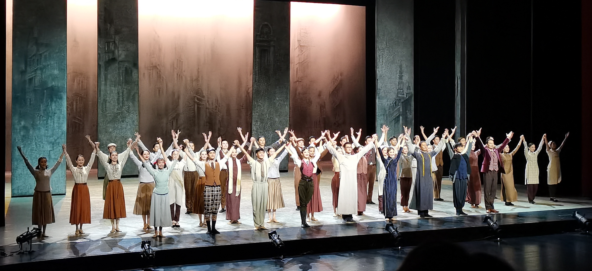

永不消逝的电波
“长河无声奔去，唯爱与信念永存”
上海街头，雨夜。
李侠与兰芳假扮夫妻，开启12年的潜伏生涯......
每一天，行走在刀锋，每一晚，秘密情报传送千里。
一重重伪装，藏起疲惫，眺望曙光。
解放前夕，黎明降至，夜色更加阴冷。
李侠的身边，无数的敌人步步逼近，无数战友消失在疾风骤雨。
报社秘书、摄影记者、裁缝掌柜、小学徒、黄包车夫、社长、卖花女，
他们的身份究竟是真是假？
无声的枪口，紧张的追逐，闪电撕裂的伤口，吞声饮泪......

2020.8.2 上海东方艺术中心
先前在文旅部官网看了官摄，觉得不太过瘾。终于买到了票走进剧场看电波！
一部舞剧，仅靠演员的形体表演与音乐灯光等因素配合，
却能将“谍战”二字发挥到淋漓尽致。
印象深刻的是电梯间试探、雨中追逐、渔光曲、裁缝店几个片段。
渔光曲中舞者们身着旗袍，蒲扇轻摇，把上海弄堂女性的优雅和闲适演绎到了极致。
裁缝店寻找最后一个线索的片段，配合灯光，实在有时空交错的感觉。
李侠的刚毅果敢；兰芬的温婉细腻；
女特务柳妮娜的亮眼，美艳、霸道，飒飒生风。
还有牺牲时颇令人动容的小裁缝，
每个人物形象都是那样立体而饱满。
两个小时，静坐于黑暗的剧场中，却彷如经历了一场激荡的生死较量。
这便是剧场的魅力、舞台的魅力，艺术的魅力、戏剧的魅力吧。
热烈奔涌，生生不息。
朱鹮
为了曾经的失去，呼唤永久的珍惜！
朱鹮，象征幸福吉祥的美丽珍禽，被称为"吉祥之鸟"，纯美、典雅、洁净。
这种珍贵的鸟类从久远的农耕时代开始，朱鹮与人类和谐共处、相伴相生；
步入近代以来，随着人类在向现代化与城市化的快速奔跑，
野生朱鹮繁衍所必须的宁静自然的栖息生态愈加险恶，朱鹮种群濒临绝迹；
到了现代，中国陕西洋县7只野生朱鹮的发现，"吉祥之鸟"再次回归人类视线。
舞剧《朱鹮》是上海歌舞团以朱鹮为题材，
启示人类与其他生灵和自然环境休戚与共关系的思考:
————但愿，守望的不只是人类自己的园，而是共同的美好家园。
2020.8.27 上海大剧院
坐在舞台靠左的位置，所以好多次都仿佛和演员有眼神交流。
无论是欣喜亦或是痛苦都真真切切地展现在眼前。
当原本翩翩飞舞的朱鹮无论是姿态还是毛色都因快节奏的人类生活而逐渐恶化，
当原本成群结队的美丽鸟儿到最后只剩下了博物馆里的标本，
只剩下早已换上现代服装的樵夫手上仅存的一片羽毛，
满头白发的樵夫和博物馆里的朱鹮再次跳舞起上幕的舞，再次被群鸟围绕，
实在为之动容，深受触动。
每一只朱鹮都实在是好灵动好细腻。
高贵的头颅、昂扬的颈部，到柔软的双臂、灵动的指间，
再到轻巧的双腿、轻盈的足尖。
一齐出现在舞台上的时候更是美轮美奂。
会忍不住在观众席上模仿他们的动作。实在是好像鸟啊，佟睿睿导演太会编舞了~
我一直把《朱鹮》视为我最喜欢的舞剧，没有之一。
（SD的时候近距离地见到了朱姐和佳俊并获得了签名呜呜呜 好喜欢他们！）

点击查看我拍摄的《朱鹮》返场片段及SD花絮
记忆深处
“黑暗中的微光，灵魂在跳舞”。
舞剧《记忆深处》以美籍华裔作家张纯如探索1937年南京大屠杀过程为线索，
展现了南京大屠杀亲历者们的回忆。
该剧选取屠杀、见证、忏悔、否认等关键词构成相对独立又相互印证的篇章，
角度不同但指向同一个真相，
既有国际友人还原的历史真相、幸存者无法忘却的伤痛，
也有当年日本军人的深切忏悔与日本右翼势力的矢口否认。
它以“真”为基础，忠于真实人物和事件，
把目光投向大屠杀惨案的个体亲历者埋藏深处、触及灵魂的记忆，让最黑暗时刻闪烁的人性光辉成为照亮未来的灯塔。

2021.9.4 上海大宁剧院
其实我一直都并不太能接受没有完整主线剧情的戏剧，但是这部舞剧是个例外。
光是舞者们每个动作、每个表情中溢出的情绪张力就足以牢牢吸引我了。
这种强烈的感情冲击大概也只有身处现场，亲眼见证才能够感受得到。
第一次在现场看唐诗逸跳舞。“灵魂在跳舞”，真可谓是用灵魂起舞的舞者！
一袭素衣白裙，柔韧又坚定。
面对惨痛历史的心碎、悲怮，无能为力的愤怒、绝望；
拿着资料定定地望向远方，眼里泪水还未回流，崩溃慢慢转为坚定，
于是化悲愤为力量后以掏空自己为代价开始奋笔疾书；
还有面对拒不承认的日本右翼时的不卑不亢，
小小的身子里溢出了大于自己几倍的气势和力量...
从肢体和眼神里透出来极为饱满又不会用力过度的属于女性作家的脆弱和坚毅，
因此你无法不将自己代入她，代入她的心碎，她的勇气，她最终的解脱。
不愧是中国歌剧舞剧院首席唐诗逸！
————记住历史，并不是为了传递仇恨；记住黑暗，是为了看到光明!
会因为这部舞剧而对那段历史有更深刻的理解和认识。
我喜欢的舞者
朱洁静
朱洁静，1985年10月3日出生于浙江省嘉兴市，中国内地古典舞女舞者。 2008年，被上海歌舞团授予首席演员 ；同年，获评国家一级演员。 2016年，主演的舞剧《朱鹮》荣获第10届中国舞蹈“荷花奖”舞剧奖。 2019年，领衔主演的原创舞剧《永不消逝的电波》先后荣获第15届精神文明建设“五个一工程”、第16届中国文化艺术政府奖“文化大奖” 。 2020年，在中央电视台春节联欢晚会上作为领舞表演舞蹈节目《晨光曲》，同年，获得第30届上海白玉兰戏剧表演艺术奖最佳配角奖。 2021年，携舞蹈作品《朱鹮》再次登上了春晚舞台。
more王佳俊
王佳俊，1984年10月10日出生于上海，毕业于上海戏剧学院舞蹈分院，现任上海歌舞团首席、国家一级演员。 近年来，在舞剧《野斑马》《天边的红云》《霸王别姬》《水月洛神》《朱鹮》等诸多原创舞蹈大戏中担任男一号。 在《中华鼓舞——龙之声》《金舞银饰》《舞台姐妹》等原创舞剧中担任主要角色。 2018年，擢升为上海歌舞团荣典首席艺衔。 2020年9月21日，凭借《永不消逝的电波》获得第30届上海白玉兰戏剧表演艺术奖主角奖提名。 2020年9月29日，凭借《永不消逝的电波》获得第30届上海白玉兰戏剧表演艺术奖主角奖。
more唐诗逸
唐诗逸，1990年9月6日出生于湖南省永州市，毕业于北京舞蹈学院，中国内地古典舞女舞者。 2006年，唐诗逸考入北京舞蹈学院中国古典舞系教育专业；并于同年凭借个人舞《碧雨幽兰》获得“桃李杯”全国舞蹈大赛A级少年甲组女子中国古典舞金奖。 2010年，正式进入中国歌剧舞剧院工作，并在之后成为了该剧院的首席舞者 、国家一级演员 。 2011年，凭借古典舞剧《水月洛神》获得“中国舞蹈荷花奖”舞剧·舞蹈诗比赛个人表演组委会特别奖。 2018年，凭借舞剧《昭君》获得上海白玉兰戏剧表演艺术奖主角提名奖。
more